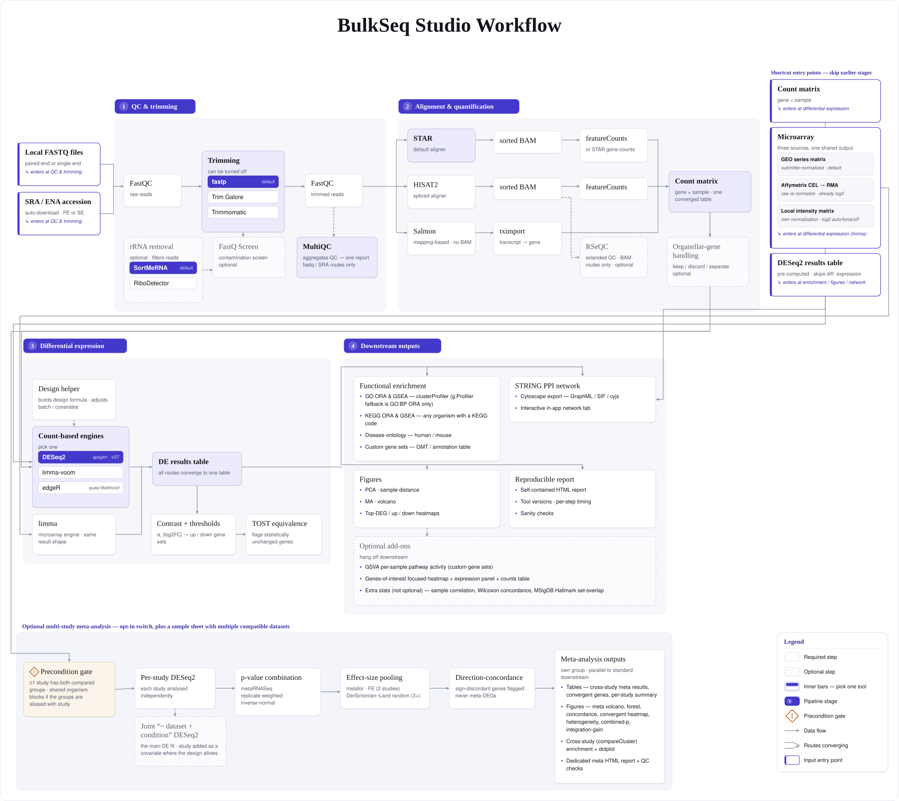

Bulk RNA-seq & microarray, no code
BulkSeq Studio
A free desktop app that takes you from raw reads or a count table to differential expression, functional enrichment, protein-interaction networks, and publication figures, without writing a single line of code.
BulkSeq Studio is for biologists who want to analyse their own bulk RNA-seq or microarray data without learning the command line. A guided navigator groups the application into Project and data, Analysis setup, Validate and run, and Explore results; it runs a transparent Snakemake pipeline and produces a count matrix, a differential-expression results table, GO/KEGG enrichment, a STRING interaction network, and figures. Everything runs locally: on Windows the pipeline runs inside WSL2, and on Linux it runs natively. Each run records the active parameters, tools, platform, reference, and input provenance needed to interpret what actually ran.


What you get
Start from anything
Paste SRR/SRP/PRJ accessions and the app fetches the FASTQ files and builds the sample sheet, or point it at local FASTQ files (single-end or paired-end). Already have counts? Upload a gene-by-sample table to skip alignment. Already have a results table, a GEO microarray series (GSE), or your own microarray matrix? Those go straight to figures and enrichment too.
QC, trimming & alignment
FastQC and MultiQC report quality; trim with fastp, Trim Galore, or Trimmomatic; and choose the aligner: STAR (the default), HISAT2 (low memory, for large crop genomes), or Salmon (mapping-based, lightest of all). Optional rRNA depletion (SortMeRNA or the reference-free RiboDetector), a FastQ Screen contamination check, and RSeQC extended QC are built in. Both paired-end and single-end reads run through all three routes, which feed the same count matrix.
Differential expression
RNA-seq runs through DESeq2 (default) with apeglm shrinkage, VST normalization, and configurable significance thresholds, with optional limma-voom and edgeR quasi-likelihood engines as cross-checks; microarray intensities run through limma. A design helper builds the formula and contrast from your metadata columns, and you get separate up- and down-regulated gene lists plus an optional GSVA pathway-activity heatmap. Two or more independent studies of the same contrast can be combined in one multi-study meta-analysis to find the genes that respond consistently across all of them.
Functional enrichment
GO over-representation and GSEA run separately on the up- and down-regulated sets, with KEGG pathway analysis for any organism that has a KEGG code, GO through g:Profiler, and disease-ontology terms for human and mouse. You can also supply your own gene sets for a custom ORA and GSEA run.
Protein networks
The Protein network page embeds the STRING protein-interaction network in an interactive cytoscape.js view: hover or keyboard-focus a protein for its fold-change and degree, re-layout, recolour by fold-change, resize by degree, filter by confidence, and export PNG, SVG, or Cytoscape files.
Built for non-model organisms
Crops and fungi are first-class. The reference catalog ships 46 organism presets, spanning model animals, crops, fungal and plant pathogens, bacteria, and a malaria parasite. KEGG enrichment runs for any organism with a KEGG code, and GO terms come through g:Profiler without needing a Bioconductor OrgDb, so an organism is never skipped just for lacking one. Validated on rice, Fusarium graminearum, Drosophila, and a human dataset.
Where to next
Install & quick start
Download the app, let the first-run setup install the tools, and run your first analysis from a public accession to differential expression and a protein network. Covers the five input modes too. Open the guide →
Analysis options
Every choice on the Analysis settings page: trimmer, rRNA tool, contamination screen, the three aligners and quantifiers, the three DE engines, the design helper, GSVA, RSeQC, and enrichment. See the options →
Outputs
The result tables, publication figures, MultiQC report, enrichment and network files, the self-contained HTML report, and the provenance a finished run leaves behind. See what you get →
FAQ & citation
Find concise answers about supported systems, local processing, interpretation boundaries, and how to cite the software and archived validation materials. Open the FAQ →